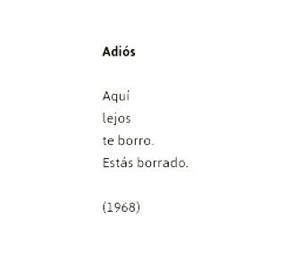
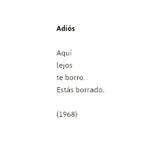

ACTIVIDAD II
Luego de escuchar la lectura del poema “Ya no” de Idea Vilariño (1958)
¿Puedes vincularlo con el poema “Adiós” de la misma autora? ¿Por qué? Justifica en no menos de ocho renglones y con citas extraídas del texto.

Luego de escuchar la lectura del poema “Ya no” de Idea Vilariño (1958)
¿Puedes vincularlo con el poema “Adiós” de la misma autora? ¿Por qué? Justifica en no menos de ocho renglones y con citas extraídas del texto.

Obra publicada con Licencia Creative Commons Reconocimiento Compartir igual 4.0